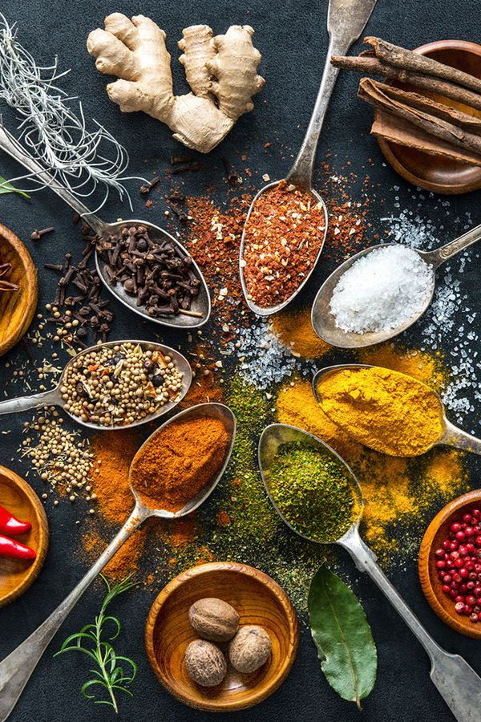

My Gallery

Food Photography
Bringing flavors to life through my lens, I capture the essence of every dish with rich colors, textures, and lighting that make food look as delicious as it tastes. My food photography blends creativity with precision, highlighting the artistry behind every meal.

Home-Decoration Photography
My home decoration photography captures the essence of comfort and style, blending vibrant colors with minimalist touches to create a welcoming atmosphere. It’s all about showcasing personal touches and the beauty of space through a lens.
Street_Photography
My street photography captures the raw, unfiltered moments of everyday life. I focus on the fleeting interactions and subtle details that often go unnoticed, revealing the beauty in the ordinary.